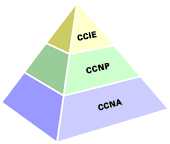
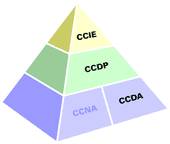

Molte aziende rivenditrici o distributrici di prodotti Cisco spingono i loro dipendenti a certificarsi (o cercano persone certificate). Questo perchè il programma partner di Cisco prevede che aziende che hanno alle loro dipendenze del personale certificato, diventano premier, silver o gold partner, avendo così accesso a servizi aggiuntivi e agevolazioni da parte di Cisco stessa (pubblicità gratuita, kit demo vari, ecc.)
Per ottenere le certificazioni il modo più semplice è senz'altro quello di seguire dei corsi, organizzati normalmente da Training Partner di Cisco. I corsi sono tenuti da istruttori certificati Cisco (CCSI) e hanno di solito un alto valore aggiunto dato dai laboratori (test pratici effettuati in classe su ambienti di training contenenti veri apparati Cisco).
Le certificazioni Cisco hanno una durata prestabilita, questo perchè il networker odierno deve mantenersi aggiornato e la tecnologia si evolve molto velocemente. Le certificazioni CCNA, CCDA, CCNP, CCDP e le specializzazioni hanno una durata di tre anni. La certificazione CCIE di due. Trascorso questo periodo sarà necessario ricertificarsi, il che non vuol dire ripetere tutti gli esami ma in linea di massima un esame di ricertificazione per ogni tipologia di certificazione conseguita.
Le certificazioni Cisco seguono due rami:


Per tutte queste certificazioni esistono varianti WAN per i Service Providers (meno ricercate, a dire la verità). Esistono poi le nuove specializzazioni Cisco (Cisco Qualified Specialist Designation in Cable, Security, SNA/IP, Voice).
E' senz'altro la certificazione da cui cominciare, per chi fa installazione e supporto reti. E' costituita da un unico test. L'esame copre una serie di conoscenze di base sul networking e qualcosa anche più in particolare sugli apparati Cisco. Le conoscenze di networking richieste sono comunque superiori a quelle necessarie a superare gli esami Microsoft MCSE, ad esempio. Bisogna avere ben chiaro il concetto di subnetting (saper maneggiare gli indirizzi IP) e conoscere le basi dei protocolli di routing. E' importante inoltre conoscere almeno di base l'interfaccia dell'IOS Cisco e un pò di concetti sullo switching (di rete locale).
Il corso raccomandato da Cisco per questo esame è l'ICND (Interconnecting Cisco Network Devices).
Per maggiori informazioni consultare la pagina CCNA sul sito Cisco.
E' il secondo livello di certificazione nel ramo installazione e supporto reti. Per ottenerla è necessario aver superato il test di CCNA e avere conoscenze molto più approfondite degli ambienti di rete Cisco. Il certificato CCNP dovrà essere in grado di implementare reti medio grandi con tecnologie che vanno dal routing allo switching, fino al dial-up e addirittura al multimediale. E' quasi impossibile raggiungere questo livello di certificazione senza avere una buona esperienza pratica nell'implementazione di reti Cisco.
La certificazione CCNP può essere conseguita superando separatamente quattro esami:
I rispettivi corsi consigliati da Cisco sono:
Per maggiori informazioni consultare la pagina CCNP sul sito Cisco.
Le specializzazioni CCNP
Le specializzazioni CCNP sono state eliminate dai programmi di certificazione a partire dal 14/05/2001. Alcune di esse sono state rimpiazzate dalle certificazioni "Cisco Qualified Specialist".
Cisco Qualified Specialist
Si tratta di certificazioni molto specifiche che coprono aree ben definite del networking:
Si tratta probabilmente della più famosa e ricercata certificazione Cisco. Chi possiede questa certificazione ha una conoscenza approfondita dei prodotti Cisco, dei processi di routing, switching e dei protocolli di reti. La certificazione prevede un esame pratico di laboratorio durante il quale il candidato deve configurare in un tempo limitato una rete di apparati Cisco, identificando eventuali problemi e ricercando soluzioni appropriate.
Per superare l'esame è richiesta una notevole esperienza nella installazione e configurazione di apparati Cisco. La certificazione prevede diversi corsi e moltissima documentazione. Inoltre per superare il test di laboratorio (si tiene solo a Bruxelles, per l'area europea) sarà probabilmente necessario tentare più di una volta.
I corsi consigliati sono:
La certificazione di base CCIE è quella su Routing e Switching. Esistono poi altre varianti:
Le altre varianti (SNA/IP, ISP Dial, WAN Switching e Design) sono state ritirate (per maggiori informazioni consultate il sito Cisco, sezione CCIE).
Si tratta della certificazione di base nel ramo progettazione e ingegnerizzazione di reti. E' un ottimo punto di partenza se vi occupate più di progettazione che implementazione di reti. Sono richieste conoscenze di base sulla progettazione di reti Cisco. Il corso su cui si basa la certificazione è il DCN (Designing Cisco Networks).
Per maggiori informazioni consultate la pagina dedicata alla certificazione CCDA sul sito Cisco.
E' il secondo livello di certificazione per chi si occupa di progettazione di reti. Sono richieste conoscenze piuttosto avanzate sulla progettazione e realizzazione di reti Cisco. In particolare, tre dei test necessari a raggiungere la certificazione sono gli stessi della certificazione CCNP:
In più è necessario superare l'esame di Design. I rispettivi corsi sono:
Per maggiori informazioni consultare la pagina Cisco dedicata alla certificazione CCDP.